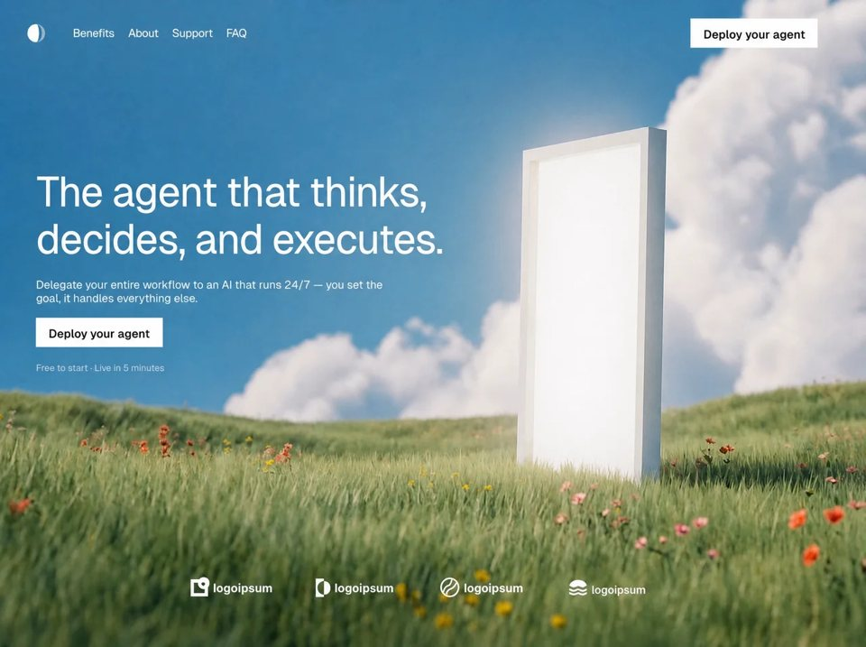

Open Agent
AIaiyilai-ai 公开页面
收录时间：2026-08-14正文：11,934 字符

本地预览图 · jpeg
完整提示词
Build a single full-screen landing page (one composition, no scroll sections) for an AI agent product. Stack: plain HTML + CSS + a tiny vanilla JS snippet. No frameworks, no Tailwind, no React. One viewport only — no second sections.
---
### Document shell (exact)
```html
<!DOCTYPE html>
<html lang="en" class="anim">
<head>
<meta charset="utf-8">
<meta name="viewport" content="width=device-width,initial-scale=1,viewport-fit=cover">
<title>The agent that thinks, decides, and executes.</title>
```
- `html` starts with class `anim` (entrance choreography). JS removes it after animations finish.
- `body`: `background:#0b1b26`, `overflow:hidden`, `height:100%`
- Font stack on body: `Geist, system-ui, -apple-system, "Helvetica Neue", Arial, sans-serif`
- Antialiasing: `-webkit-font-smoothing: antialiased`, `-moz-osx-font-smoothing: grayscale`, `text-rendering: geometricPrecision`
### Fonts (exact)
Self-host / `@font-face` with `font-display: block`:
| Family | Weights | Usage |
|--------|---------|--------|
| **Geist** | 400, 500, 700 | All UI text (nav, headline, sub, buttons, note, menu) |
| **Wordmark** | 600, 700 | Only the four “logoipsum” wordmarks under the logos |
Geist = Vercel Geist Sans. Wordmark = the logoipsum-style display face used for the trust-row names (not Geist). Do not substitute Inter/Roboto/system for either.
Easing tokens on `:root`:
```css
--e-reveal: cubic-bezier(.16, 1, .3, 1);
--e-soft: cubic-bezier(.25, .8, .28, 1);
```
---
### Background video (exact URL + behavior)
```
https://d8j0ntlcm91z4.cloudfront.net/user_38xzZboKViGWJOttwIXH07lWA1P/hf_20260808_113714_92f54685-af06-4020-8f35-dbb8871b9d32.mp4
```
- Element: `<video class="stage-video" autoplay muted loop playsinline src="…">` as first child of `.stage`
- CSS: `position:absolute; inset:0; width/height:100%; object-fit:cover; object-position:center; z-index:0; pointer-events:none`
- Stage fallback color behind video: `#3f7ea1`
- Video never moves / never animates; only foreground UI enters
---
### Scale system (critical — do not freestyle spacing)
Reference composition: **1205 × 884 CSS px**. Every length is `calc(N * var(--k))`.
```css
.stage {
--ref-w: 1205;
--ref-h: 884;
--k: min(calc(100vw / var(--ref-w)), calc(100svh / var(--ref-h)));
--pad: calc(41 * var(--k));
--heroL: calc(53.5 * var(--k));
position: fixed; inset: 0;
width: 100vw; height: 100svh; height: 100dvh;
overflow: hidden;
background-color: #3f7ea1;
}
```
`.frame` = vertically centered 1205×884 band over the full-bleed video:
```css
.frame {
position: absolute; left: 0; right: 0; top: 50%;
height: calc(var(--ref-h) * var(--k));
transform: translateY(-50%);
z-index: 1;
}
```
---
### DOM structure (exact hierarchy)
```
.stage
video.stage-video
.frame
header.hdr
a.brand > svg.mark
nav.nav > a×4
a.btn.btn-nav > span
button.burger#menu-toggle > i×2
.hero
h1 > .ln>.lni × 2 (+ br between)
p.sub
a.btn.btn-hero > span
p.note
.logos
.logo.l1 … .logo.l4 (each: svg.pl + span.wm)
.menu#site-menu
nav.menu-list > a×4 (text + arrow svg)
.menu-foot
a.btn.menu-cta > span
p.menu-note
```
---
### Brand mark SVG (exact)
25×25 viewBox, white crescent mark:
```svg
<svg class="mark" viewBox="0 0 25 25" aria-hidden="true">
<path d="M12.5 0 A12.5 12.5 0 0 0 12.5 25 A4 12.5 0 0 0 12.5 0 Z" fill="#fff"/>
<path d="M12.5 0 A12.5 12.5 0 0 1 12.5 25 A8.2 12.5 0 0 0 12.5 0 Z" fill="#fff" fill-opacity="0.47"/>
</svg>
```
Size: `calc(25 * var(--k))` square. Brand link: `href="#"`, `aria-label="Home"`.
---
### Desktop header
- Position: absolute, full width, `top: calc(21.6 * k)`, `height: calc(40.2 * k)`, horizontal padding `--pad`
- Flex row, `align-items: center`
- Nav: `margin-left: calc(40 * k)`, `gap: calc(19.9 * k)`
- Nav links (exact): **Benefits**, **About**, **Support**, **FAQ** → `#benefits` `#about` `#support` `#faq`
- Nav typography: white, weight 400, `font-size: calc(16.07 * k)`, `letter-spacing: calc(-0.46 * k)`, `line-height: 1`
- Nav hover: `opacity: .72` over `.18s ease`
- CTA `.btn-nav`: `margin-left: auto`, `width: calc(180.5 * k)`, `height: calc(40.3 * k)`, label **Deploy your agent** inside `<span>`
- Button style (shared `.btn`): white bg `#fff`, text `#000`, weight 500, `font-size: calc(16.34 * k)`, `letter-spacing: calc(0.15 * k)`, **border-radius: 0** (sharp), no border
- Button label optical nudge: `.btn span { transform: translateY(calc(1.0 * k)) }`
- Button hover: `background: #e8e8e6`
- Burger: hidden on desktop
---
### Desktop hero (left-aligned absolute stack)
Container `.hero`: `left: var(--heroL)`, `top: 0`, `right: var(--pad)`
**Headline** (exact copy, two lines):
> The agent that thinks,
> decides, and executes.
Markup:
```html
<h1>
<span class="ln"><span class="lni">The agent that thinks,</span></span>
<br>
<span class="ln"><span class="lni">decides, and executes.</span></span>
</h1>
```
- On desktop: `h1 br { display: none }` — line break comes from `.ln { display: block }`
- Position: `top: calc(226.5 * k)`, weight 400, white
- Size: `font-size: calc(58.54 * k)`, `line-height: calc(65 * k)`, `letter-spacing: calc(-1.595 * k)`, `white-space: nowrap`
**Sub** (exact, with `<br>` after “the ”):
> Delegate your entire workflow to an AI that runs 24/7 — you set the
> goal, it handles everything else.
- `top: calc(378.2 * k)`, weight 400, `color: rgba(255,255,255,0.9)`
- `font-size: calc(15.9 * k)`, `line-height: calc(17.75 * k)`, `letter-spacing: calc(-0.08 * k)`, nowrap
**Hero CTA** `.btn-hero`: `top: calc(432.6 * k)`, `width: calc(180.3 * k)`, `height: calc(40.3 * k)`, same **Deploy your agent** label, `href="#deploy"`
**Note**:
> Free to start · Live in 5 minutes
(middle dot `·`)
- `top: calc(495.35 * k)`, `font-size: calc(12.94 * k)`, `color: rgba(255,255,255,0.6)`, `letter-spacing: calc(-0.05 * k)`
---
### Trust / logos row (desktop)
`.logos`: centered near bottom
`left: 50%`, `bottom: calc(70 * k)`, `width: calc(645.6 * k)`, `height: calc(27 * k)`, `margin-left: calc(-329.5 * k)`
Four logos absolutely placed:
| Class | left | gap | wordmark |
|-------|------|-----|----------|
| `.l1` | 0 | `5k` | logoipsum (weight 700) |
| `.l2` | `178k` | `6k` | logoipsum + white trademark dot `.tm` |
| `.l3` | `356k` | `6k` | logoipsum |
| `.l4` | `538k` | `7k` | logoipsum with `.wm-sm` (weight 500, size `15.25k`, bottom offset `0.75k`) |
Wordmark CSS:
```css
.wm {
font-family: Wordmark, Geist, sans-serif;
font-weight: 700;
font-size: calc(16.4 * var(--k));
color: #fff;
bottom: calc(3.5 * var(--k)); /* relative */
}
.tm {
position: absolute;
right: calc(-6 * k); top: 0;
width/height: calc(3 * k); border-radius: 50%; background: #fff;
}
```
**Logo SVGs (exact paths)** — all white strokes/fills:
**l1** viewBox `0 0 26.6 27.3`, width `calc(27.6 * k)`, stroke `#fff` width `4.5`:
- rect `x=2.85 y=6.65 w=19.4 h=18.4`
- circle `cx=18.6 cy=9.4 r=5.75`
**l2** viewBox `0 0 20.7 25.5`, width `calc(21.0 * k)`, fill `#fff`:
```
M0 0h11.5v25.5H0Zm11.5 3.8a9.2 9.2 0 0 0 0 18.4Z
M11.5 3.8a9.2 9.2 0 0 1 0 18.4Z
```
**l3** viewBox `0 0 25 25`, width `calc(27 * k)`, stroke `#fff` width `2.1`:
- circle `cx=12.5 cy=12.5 r=11.45`
- path `M15.6 2.6c-2.4 3.2-.9 4.6-2.9 6.4c-2.1 1.9-4.4 1.4-6.1 3.4c-1.6 1.9-1.1 3.6-2.6 5.2`
- path `M21.1 7c-2.6 2.6-2.4 4.4-4.6 6c-2.3 1.7-4 .9-5.9 2.8c-1.7 1.7-1.5 3.4-3.1 5`
**l4** viewBox `0 0 23.9 20.3`, width `calc(25.0 * k)`:
- filled wave: `M0,8.00C2.15,8.00 … A11.95 8.0 0 0 0 0,8.00 Z`
- two stroked waves at y=12.70 and y=17.40, stroke-width `2.3`
Icon vertical nudges: l1 `margin-bottom: -1k`, l2/l3 `-2k`, l4 `+0.5k`.
---
### Entrance animation (exact choreography — plays once)
Four keyframes, all upward travel, no overshoot:
| Name | Behavior |
|------|----------|
| `ent-line` | `translateY(120%)` → `0` (masked line reveal, no fade) |
| `ent-lift` | opacity 0 + `translateY(12k)` → visible |
| `ent-settle` | opacity 0 + `translateY(6k)` → visible |
| `ent-emerge` | opacity 0 + `translateY(4k)` → visible |
| `ent-fade` | opacity 0→1 (reduced-motion only) |
**Desktop timeline** (`prefers-reduced-motion: no-preference`):
1. **Frame / chrome (settle .60s, `--e-soft`)**
- brand delay `.060s`
- nav links: `.110 / .155 / .200 / .245s`
- btn-nav + burger: `.270s`
2. **Message (masked line reveal)**
While `.anim` is on: `.ln { overflow:hidden; padding-bottom:8k; margin-bottom:-8k }`
`.lni` uses `ent-line` `.95s` `--e-reveal`
- line 1 delay `.300s`
- line 2 delay `.420s`
3. **Resolution (lift)**
- sub: `.70s` delay `.700s`
- btn-hero: `.62s` delay `.860s`
- note: `.58s` delay `.930s`
4. **Footing (emerge .62s)**
- l1→l4 delays: `1.020 / 1.075 / 1.130 / 1.185s`
- Sequence complete ≈ **1.805s**
**JS teardown** (exact behavior): on load, wait for all `ent-*` `document.getAnimations()` to finish, then `document.documentElement.classList.remove('anim')`. Safety `setTimeout(teardown, 6000)`. This strips masks, animations, and `will-change`.
Reduced motion: only `.anim .frame { animation: ent-fade .28s linear both }` — no travel.
---
### Mobile / tablet rebuild
Trigger: `@media (max-aspect-ratio: 11/10), (max-width: 820px)`
- `--k: calc(100vw / 430)` (or `100vw / 620` when also `min-width: 560px` + max-aspect 11/10)
- `--pad` effectively 20k
- `.frame`: top 0, no translate, height 100%, flex column
- Hide `.nav` and `.btn-nav`; show `.burger` and `.menu` (`display:flex`)
- Header relative, height ~`66k`, z-index 25, padding 20k
- Hero: `margin-top: auto`, bottom-anchored, padding `0 20k 18k`
- Headline reflows: `.ln/.lni` become `inline`, `white-space: normal`
size `46k` / line `51k` / tracking `-0.3k`
- Sub: `margin-top 16k`, size `15.5k`, line `21k`, `max-width 360k`, hide its `<br>`
- btn-hero: `margin-top 22k`, `190×46 k`, font `16k`
- note: `margin-top 16k`, font `13k`
- Logos: relative flex wrap, 2×2-ish, centered, gaps `22k` row / `30k` column, each logo ~45% width; icons forced `width: 24k`
**Mobile entrance:** unmask headline — single `ent-lift` on `h1` (`.85s`, delay `.300s`). Adjusted delays: sub `.640`, CTA `.780`, note `.850`, logos `.940–1.090`.
---
### Burger + frosted menu (mobile)
Burger: `42×42 k`, two white bars (`22×1.8 k`, radius 2px). Open state (`.nav-open` on `html`): bars rotate ±45° with `translateY(±3.5k)`, transition `.38s cubic-bezier(.6,.05,.2,1)`.
Menu overlay:
```css
background: linear-gradient(180deg, rgba(22,52,72,.62) 0%, rgba(11,29,41,.86) 100%);
backdrop-filter: blur(26px) saturate(140%);
```
- Fixed inset 0, z-index 20, flex column
- Padding: `84k 20k 30k`
- Opacity/visibility transition `.34s`
- Links: same four labels, each with 16×16 arrow SVG (path `M4 12 12 4M12 4H5.5M12 4v6.5`, stroke white 1.6)
- Link type: `font-size: 31k`, tracking `-0.6k`, padding `19k` 0, hairline borders `rgba(255,255,255,.16)`
- Stagger in: opacity + `translateY(16k)` → 0, delays `.10/.16/.22/.28s`, ease `cubic-bezier(.16,.84,.44,1)`
- Footer CTA full-width height `52k`, note centered under it: `Free to start · Live in 5 minutes` (`·` in HTML)
**Menu JS:** toggle `nav-open` on `html`; Escape closes; focus trap into menu; close on link click; close when media `(min-width:821px) and (min-aspect-ratio:11/10)` matches.
---
### What NOT to add
No purple gradients, no cards, no stats strip, no scroll sections, no inset hero media, no floating badges, no border-radius on CTAs, no second typeface besides Geist + Wordmark, no replacing the CloudFront video with a still or a different URL.把上面的提示词完整复制到支持长文本的 AI 工具中，再按需要替换品牌名、配色与文案。提示词描述的是整页结构与动效节奏，生成后建议在真实浏览器里检查首屏加载和移动端表现。
来源与版权
该条目来自公开提示词页面，原始出处信息未随页面提供。
提示词文本与预览素材的版权归原作者或原平台所有，本站仅作索引与归档。若你是权利人并希望移除本条内容，请通过联系方式告知。